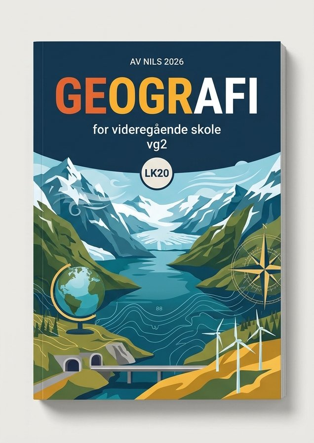

Hovedstamme
Fordypning
Naturfare / konflikt
Følg numrene 1–14 nedenfra og opp · Dra for å panorere · Rull for zoom

Nils sin geografibok · Vg2 · LK20
Velkommen til Kapittel 3: Ytre krefter og landformene i Norge
Her lærer du hvordan vann, is, vind og tyngdekraft former det norske landskapet – med figurer, lokale eksempler fra Telemark, ordforklaringer og kontrollspørsmål.
1. Velg kapittel til venstre
I kapittelmenyen til venstre velger du hvilket tema du vil lese (3.1–3.5). Klikk på et punkt for å åpne fagstoff, figurer og oppgaver.
2. Bytt til Kunnskapstreet
Ønsker du en annen visningsmåte? Klikk på 🌳 Kunnskapstre i toppmenyen for å se hvordan alle landformene henger sammen i et interaktivt kart.
Tips: Du kan også bytte mellom Enkel og Full tekst øverst, holde musepekeren over grønne fagbegreper for forklaring, eller åpne Klassisk visning for å lese hele kapittelet på én side.
Kompetansemål & Læringsfokus